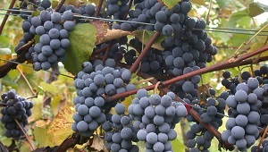
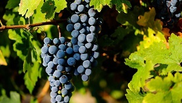
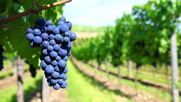
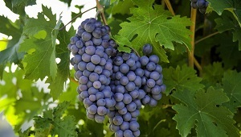
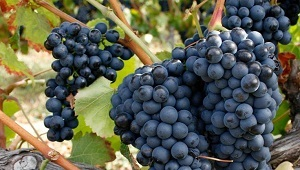

TINTAS
CABERNET FRANC
Las bayas de Cabernet Franc son de tamaño pequeño, forma esférica, hollejo fino. Los vinos resultantes son suaves, poco ácidos y por lo tanto, más fáciles de beber en el corto plazo. Los aromas que la distinguen son complejos y sofisticados recordando a frutos del bosque tales como moras, grosellas y arándanos; a hierbas aromáticas como menta o albahaca; a especias como pimienta negra y pimentón; a notas vegetales como pimiento verde y hoja de tomate sin olvidar sus matices florales (violetas).
CABERNET SAUVIGNON
Es la variedad que mejor se adapta en todo el mundo. Esta variedad de uva surgió del cruce entre las variedades Cabernet Franc y Sauvignon Blanc. El pequeño tamaño de la baya, su piel gruesa y su rendimiento medio, nos permite extraer más color y más tanino de esta variedad, lo que garantiza un elevado potencial antioxidante, o lo que es lo mismo, vinos con gran capacidad para una larga crianza en botella tras su período en barrica. Sus aromas primarios son los de frutos rojos y negros, así como a violetas. Si se tienen notas a pimiento verde esto denotaría una maduración incorrecta. Durante la crianza adquirirá aromas complejos bien por evolución de los primarios o por aparaición de secundarios y muy especialmente de aromas terciarios (los propios de la crianza), con presencia de regaliz, cedro, tabaco o trufa.
MALBEC
Es la variedad perfecta para los distintos terruños argentinos. Destacado por su color oscuro intenso y su explosión frutal, el Malbec ofrece una amplia gama de perfiles aromáticos asociados a las condiciones específicas del terroir. En general, sus aromas recuerdan a cerezas, frutillas o ciruelas, pasas de uva y pimienta negra en algunos casos con reminiscencias de frutas cocidas (mermelada). Añejado en madera, adquiere notas de café, vainilla y chocolate. En boca tiene la capacidad de llenar el paladar gracias a sus taninos dulces, sedosos y envolventes.
PINOT NOIR
Esta cepa es la que más rápido produce mutaciones. Y nuestro Pinot Noir es particularmente distinto a otros por su gran concentración, fruto de la cantidad de horas de luz, la amplitud térmica y el tipo de suelo. Se utiliza frecuentemente en las bases de los mejores espumantes -vinificada en blanco-, mientras que también se logran muy buenos ejemplares varietales tintos. De acuerdo a los diferentes clones su color va desde el rubí hasta el rojo intenso, conservando siempre una buena homogeneidad aromática de frutas rojas y negras en las que se destacan la frambuesa, la mora, la remolacha y la tierra. En boca posee sabores muy elegantes.
SYRAH
Históricamente utilizada en la elaboración de vinos de corte, en la última década su cultivo creció y se expandió de manera generalizada. Se adapta muy bien a las regiones de fuerte insolación como el Valle de Tulum, en San Juan, y los departamentos del este de Mendoza. En las regiones más frías de Mendoza, como el Valle de Uco, se obtienen vinos de gran estructura, aptos para la crianza. En las regiones más cálidas, los vinos presentan buen color y marcada expresión frutal. Evidencia colores intensos, textura plena y aromas que varían desde los florales, en su juventud, hasta los especiados y animales, luego de la crianza en roble y botella.